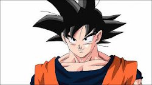

Antes de su aparición en el manga entrenaba en el templo Ōrin, donde sus compañeros y superiores siempre le despreciaban. Viajó a la casa del legendario maestro Kame Sen'nin para que le impartiera conocimientos de artes marciales, allí coincidió con Son Gokū.
Tras acabar el entrenamiento, ambos se presentaron al 21º Tenkaichi Budōkai. En las eliminatorias, Krilin derrotó, para su propia sorpresa, de un modo sorprendentemente fácil a uno de sus antiguos compañeros del Templo, gracias al entrenamiento del maestro que principalmente se centraba en intensificar el estado físico, mental, la resistencia y la fuerza, ya que tanto él como Gokū ya poseían una excelente base previa de las artes marciales. En su primer combate de las finales, peleó contra Bacterian, un luchador pestilente al que pudo vencer gracias a que (aconsejado por Gokū) se acordó que no tiene nariz para ignorar el olor. En su segundo combate se enfrentó contra Jackie Chun, que no era otro que su propio maestro disfrazado. Krilin no consiguió vencerle, así que decidió seguir entrenándose en casa del anciano maestro.
Cuando Bulma y Son Gokū se dirigían en busca de una de las Dragon Balls bajo el mar, decidió unirse a ellos, pero fueron atacados por el General Blue del Ejército Red Ribbon, quien también buscaba la Dragon Ball. Tras una intervención de Gokū, la cueva subterránea se hundió y ellos apenas escaparon.
Cuando Gokū ya había conseguido seis Dragon Balls en su poder decidieron ir a casa de Uranai Baba, ya que la séptima no aparecía en el Dragon Radar, ella les prometió decirles donde estaba si llegaban hasta el final de su Torneo particular. Krilin fue el primero del grupo, pero perdió contra Dracula Man, así que Upa y Puar salieron en su lugar.
En el 22º Tenkaichi Budōkai se enfrentó en la fase final a uno de los discípulos del Tsuru Sen'nin, Chaozu, un misterioso luchador con poderes psíquicos a quien pudo derrotar al inducirlo a romper su postura de pelea obligándolo a contar con los dedos. Pero en el siguiente combate lucho contra su mejor amigo: Gokū, cuando Krilin estaba a punto de perder decidió agarrarle por la cola, punto débil del Saiyajin, pero éste había entrenado para perder la debilidad y consiguió sacarlo del escenario. Al final del torneo, fue asesinado por Tambourine, uno de los engendros de Piccolo Daimaō.
El dragón Shenlong le resucitó junto con Chaozu y Kame Sen'nin después de la derrota de Piccolo. Se siguió entrenando hasta la 23ª edición del Tenkaichi Budōkai, donde en la fase final puso en el primer combate en aprietos al participante Ma Junior, aunque se acabó rindiendo tras agotar sus fuerzas sin conseguir derrotarlo.
Kurilín tiene seis puntos en la frente y se rasura la cabeza cuando ejerce las artes marciales. Desde la Saga de Majin Boo como civil, suele llevar un cabello de color negro y corto, con algunos mechones que ocultan parte de sus puntos en la frente. Como Artista Marcial, Kame-Sen'nin le dio el Uniforme de la Escuela Tortuga, de color naranja con cinta azul oscuro (originalmente el traje era de color rojo y cinta negra), el cual usa siempre excepto en la Saga de Majin Boo y con el fondo de la insignia tortuga de color blanco (amarillo en Dragon Ball). Llevaba unas zapatillas chinas de color negro y ocasionalmente la Ropa de Combate Pesada que vestía Son Goku con Dios. En el Torneo de la Saga de Majin Boo, utiliza usa un polo rojo y pantalones deportivos color beige.
En La Batalla de los Dioses usa un uniforme oriental de color verde de la Escuela Tortuga. En La Resurrección de 'F' y en Dragon Ball Super usa un uniforme de policía y un casco y durante su enfrentamiento con el Ejército de Freezer y en Saga de Supervivencia Universal utiliza un dogi color naranja claro con muñequeras y correa color azul añil y zapatillas chinas. En sus momentos libres, utiliza una camiseta color escarlata con la palabra "Tacos" y bermudas color beige con zapatos azules.
Kurilín es un hombre terrícola de 153cm de estatura y que pesa 48kg.
Originalmente en su niñez cuando conoció a Son Goku y entrenaron juntos con Kame-Sen'nin, Kurilín se mostraba como alguien más ambicioso, celoso y egoísta que respetaba poco las reglas. Buscó hacer lo posible para ser el favorito del maestro. Tras ocho meses de entrenamiento, su actitud se ablanda un poco al ver los logros que él mismo está obteniendo junto con su compañero en las preliminares del Torneo frente a los monjes que le hacían bullying en el Monasterio de Duolín y empieza a sentir cierta empatía por el Saiyan cuando ve que logra enfrentarse con muchos oponentes difíciles, especialmente cuando ve cómo le apoyaban Bulma y sus otros compañeros de aventuras. En efecto, en la Saga de la Red Ribbon en el enfrentamiento contra el General Blue y posteriormente en el Palacio de Uranai Baba, fue de gran ayuda para Goku.
Goku y Krillin mejores amigos La amistad entre Kurilín y Son Goku.
Cuando se enfrentó a Son Goku en su primer entrenamiento en la 22° Edición del Torneo Mundial de las Artes Marciales y después una corta rivalidad entre ambos (Kurilín incluso admite que detestaba a Goku al principio), se convierte en el mejor amigo de Goku para toda la vida y su personalidad antigua se vuelve más bondadosa y altruista, llegando incluso a ser uno de los más tolerantes en cuanto a la personalidad tan despreocupada y juguetona que tiene Goku. Incluso ha logrado perdonar la vida a sus enemigos como en el caso de Vegeta durante la Saga Saiyan (a pedido de Goku), decisión que le beneficiaría a él y a los Guerreros Z posteriormente. También perdona la vida de la Androide Número 18, cuando se le presenta la oportunidad de activar su secuencia de apagado, debido a que estaba enamorado de ella (aunque esto puso a todo su planeta en riesgo ya que fue absorbida por Cell para poder completar su desarrollo). En un poco de fortuna irónica, más tarde se casa con la hermosa androide y tienen una hija llamada Marron.
Es valiente y lleno de recursos, junto con Yamcha, se adaptó a una vida relativamente mas normal que muchos de sus amigos, buscando mujeres en su vida. Está entre los seres humanos más "normales" de sus compañeros, ya que puede ser visto usando ropa casual en los momentos de paz, además de su típico Uniforme de la Escuela Tortuga, además de participar en otras actividades cotidianas y posteriormente conseguirse un trabajo. Como el mejor amigo de Goku, Kurilín fue uno de los pocos en conservar un rol destacado durante la historia, incluso personajes como Yamcha, Tenshinhan, Chaoz, Yajirobe, entre otros, quedaron atrás. En general, Kurilín es un personaje muy valorado en todo Dragon Ball: poderoso, leal y audaz; siendo el segundo personaje con mayor de apariciones en el manga. Asimismo, es el Artista Marcial Terrícola más versátil y experimentando, con un gran arsenal de técnicas tan amplias como los Saiyan, recurriendo a estrategias que pueden llevarlo a vencer a Son Gohan de adulto en forma base durante un entrenamiento.
 |
 |
 |
 |
 |
 |